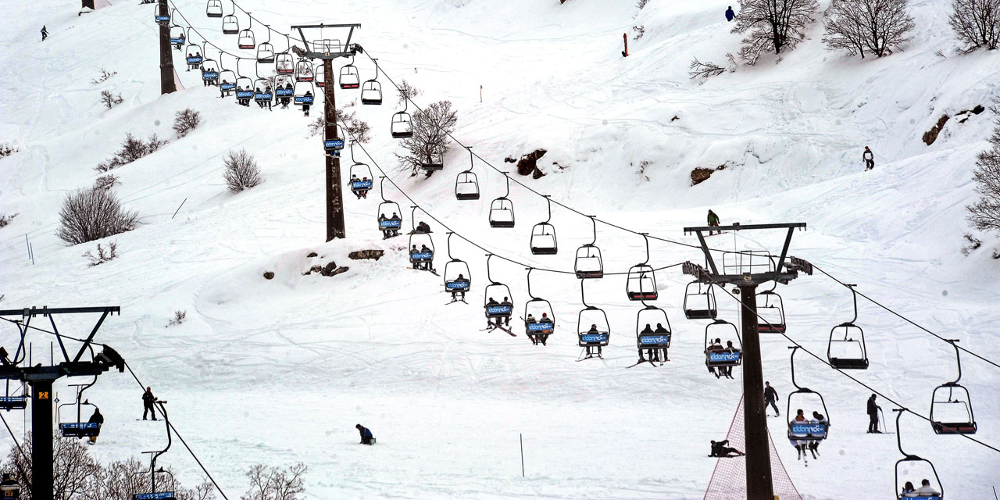
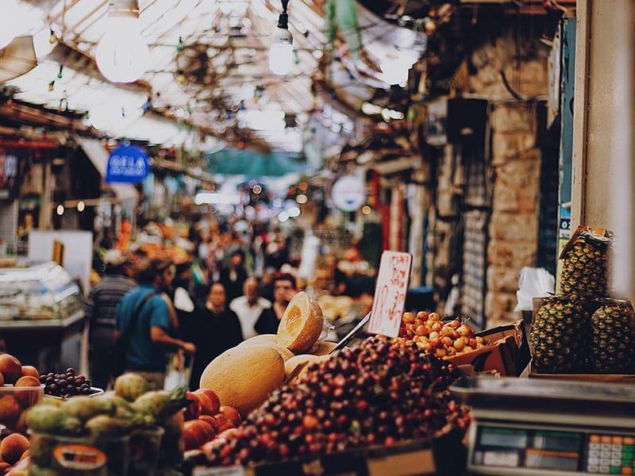

טיול משפחתי בהר החרמון
תאריך הטיול: 15/01/19
החרמון לא מיועד רק לסקי כמובן, ומהווה בילוי משפחתי כבר שנים רבות.
כל המשפחה יכולה לעלות או לרדת ברכבל שצופה על הנוף הלבן.
אטרקציה נוספת באתר היא מזחלות האקסטרים שנמצאות על מסלול מיוחד, עליו הן דוהרות במהירות של 45 קמ"ש.
הטיול שלנו התחיל במתחם הקבלה באתר החרמון, קיבלה את פנינו מנהלת המקום, הסבירה על המתקנים הקיימים במתחם.
את מסלול הטיול, המלצות טיפים ועוד לקחנו מאתר O.C.O !
חוויה מגבשת לכל המשפחה!
לפרטים נוספים והזמנה !

סיור קולינרי בשוק מחנה יהודה בירושלים
תאריך טיול: 15/03/19
כשאתם מתכננים טיול בחו"ל, חלק גדול מהתוכניות יהיה בדרך כלל מבוסס על המסעדות ובתי הקפה בהם תבקרו – הרי אין דרך טובה יותר להכיר עיר, מאשר במאכלים המקומיים שהיא מציעה, בקונדיטוריות המומלצות, במסעדות המיוחדות, בשווקים ובמאפיות.
אז גם ישראל, מדינתנו הקטנה, לא נופלת מדינות אחרות בתחום הקולינארי ואף להפך מכך. יצאנו לסיור קולינרי ביחד עם המדריך שלמה מאיר מ O.C.O היה טיול מרגש מגבש וחוויותי!
ישראל היא סוג של קיבוץ גלויות, המרכז מאכלי עדות רבים ומגוונים, מסעדות קטנות וותיקות עם מאכלים שכולם אוהבים לצד מסעדות חדשות, חדשניות וטרנדיות, שחלק מהן, כבר פתחו סניפים נוספים בערים גדולות בעולם.
מהסיבה הזאת, זה ודאי לא יפתיע אתכם לשמוע שהרמת הפופולריות של תחום של תיירות קולינרית בישראל, נמצאת במגמת עליה ויותר ויותר אנשים גם מקומיים וגם מחו"ל מבקשים להכיר מקרוב וליהנות מכל מה שיש לעולם הקולינריה של ישראל להציע – ויש המון.
לפרטים נוספים והזמנה !